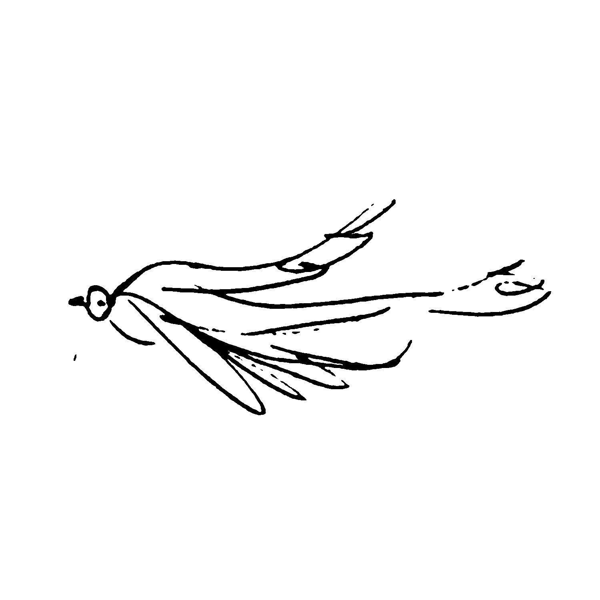

immediacy

~~~~~

walku

<3<3<3

brain freeze
an arc of doves
hand-coded by ian covert
click
immediacy
~~~~~
walku
<3<3<3
brain freeze
an arc of doves
hand-coded by ian covert
home

The Immediacy of Scrollworld
For the past few months, I have been knee-deep in a Sex and The City marathon. I’m nearing the corner of the sixth and final season of the show, prepared to take a nosedive into the less-favored movies and infamous reboot. As I watch the show, most often in bed on my laptop, I observe its depiction of daily life with an anthropological fascination. Obviously, television shows are rarely indications of what it’s like to actually live through or during a period of time. However, one thing that consistently stands out to me about the ladies of SATC is not just their sexual or romantic escapades, but instead, their methods of communication. More specifically, there is a palpable lack of immediacy.
Carrie Bradshaw commonly runs into issues surrounding how she communicates (or doesn’t) with her partners. For example, she will disagree with the way a man speaks to her or treats her, yet feign happiness and slowly begin to resent him. She will sit through days – or weeks – worth of okay dates and awkward nights over. Then, after she can’t take it anymore, she will finally blurt out how she really feels in an inarticulate yet charming fashion. Other times she will stand by the phone expecting a call from a man she’s interested in. When it finally rings, she lets it go to voicemail and listens as he leaves a message until she’s so overcome with intention that she interrupts him by picking up the call anyway. These communication snafus can be chalked up to quirky characterization or relatable delusions by audiences, however, I think they also speak to a world that does not prioritize immediacy – a phenomenon that I suspect is disappearing more and more with the advent of Scrollworld.
In Scrollworld, immediacy is the name of the game. The second that you open up Instagram, your every move is being tracked. If you view someone’s message or story post, they will immediately know that you did so. Your posts are sent across the information superhighway at record speeds, and you will receive notifications if your item fails to upload before you close the app. Some brave souls even keep the activity status on, meaning that any time they are using the app, a small green dot will appear by their name, indicating their digital presence. This puppetry of immediacy doesn’t translate to real accessibility, much like Carrie’s phone going to voicemail didn’t translate to her not being able to pick up. However, these visual and physical indicators do not stop the body from sensing that it is being watched. Scrollworld does what it can to arrest your attention and enthrall you in a world where you and your online friends can be together, at the same time, digitally.
And for what? Money, of course! The more time you spend on the app, the more time it can spend advertising to you, gathering your data, etc. But that’s a topic for another time.
My point is, it wasn’t always this way. Even if the ladies of SATC had to slog through weeks worth of missed calls and imagined feelings, their lives kept moving. They weren’t tied to a pocket-sized indication of their constant availability (or the lack thereof of their partners’.) And if they couldn’t immediately know what somebody was thinking, all they could do was meet for lunch and talk to each other about it. I don’t think that Scrollworld is a purely negative thing, but I do think it is worth it to examine how it affects your relationships with other people and the world around you. I have fallen victim to the desire for immediacy in ways that distinctly change how I think and behave. When I try my best to release this desire, the world around me seems to open up in fascinating ways. My attention is no longer turned to who is watching me or who I am watching through a screen. Instead, I move through physical routines with intention, knowing that Scrollworld will always be there for me should I pick my phone back up. I used to think that having the “do not disturb” function constantly running on my phone was rude to those who wanted to contact me, but now, I’m starting to view it as a necessity. And even if I have a few more missed calls or unread text messages, I’m still living the same life I was before – just less immediate.
home
home
Let's Go On A Walk
with haiku!

walk with purpose down
the street in furry jacket
music in my ears

leaves must go somewhere
guess that big tube sucks them up
sun makes life look orange

tiny rocks were made
by a mistake, or blunder
wonder how they feel

this arc of pink cloud
inspires me to look up,
meet it with my eyes
home
home
A Digital Brain Freeze
I typically do not enjoy eating popsicles, as I get brain freezes very easily. I also have sensitive teeth, and my few years of committed Sensodyne usage got me nowhere. However, something I have been observing recently is a digital brain freeze. It happens when I am receiving too much screen/audio input and I get incredibly overwhelmed. Maybe it’s the screens, or maybe it’s the noises, or maybe it’s the ever-present algorithm looming over my every move. It could also just be textbook overstimulation. However, this feeling is distinctly digital.
The more time I spend away from my phone, the more I notice how clear my head can be without it. For the past couple of weeks, I have been spending my mornings completely phoneless. I get up with my first alarm, and immediately start my day without any digital input. I make my way through getting ready, cooking and eating my breakfast with no music or podcasts or youtube videos. I have spent many a morning at my kitchen table, eating in silence and staring out the window. This may sound like child’s play to some, but it’s been a big deal for me! I have observed a deep feeling of calmness whenever I spend this time with myself, with no other inputs into my brain or body.
After phone-free mornings, the digital entities begin to float back into my life and brain by way of every-so-often phone check-ins. One night, I was sitting in my bed, with my laptop open, my headphones playing music, and my phone in my face, open to scrollworld. In a moment, it all became too much for me. The digital brain freeze. Maybe this is a sign that I am recuperating my attention span? Perhaps reading books is on the horizon…
x

An Arc Of Doves is an experimental website inspired by my recent exploration of using my phone less. This exploration, and site, has been sonically guided by the ambient song "An Arc Of Doves" by Brian Eno and Harold Budd. This website is meant to act as a recording, inquiry, and shifting landing page of my current thoughts and feelingss surrounding technology and its impact on my life.
Hand-coded by Ian Covert
Other sites by me